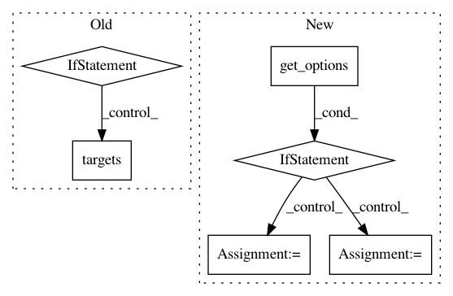

96776e481b45574973223af77a9959d06cba75af,contrib/kythe/src/python/pants/contrib/kythe/tasks/indexable_java_targets.py,IndexableJavaTargets,get,#Any#Any#,16
Before Change
Computes them lazily from the given context. They are then fixed for the duration
of the run, even if this method is called again with a different context.
if not cls._targets:
// TODO: Should we index COMPILE scoped deps? E.g., annotations?
cls._targets = context.targets(
lambda t: isinstance(t, JvmTarget) and t.has_sources(".java"),
exclude_scopes=Scopes.COMPILE
)
return cls._targets
_targets = None
After Change
Computes them lazily from the given context. They are then fixed for the duration
of the run, even if this method is called again with a different context.
if self.get_options().recursive:
requested_targets = context.targets(exclude_scopes=Scope(self.get_options().exclude_scopes))
else:
requested_targets = list(context.target_roots)
// We want to act on targets derived from the target roots, e.g., if acting on a binary
// jar_library we actually want to act on the derived java_library wrapping the decompiled
// sources.
for t in context.target_roots:
requested_targets.extend(context.build_graph.get_all_derivatives(t.address))
return [t for t in requested_targets if isinstance(t, JvmTarget) and t.has_sources(".java")]
In pattern: SUPERPATTERN
Frequency: 3
Non-data size: 6
Instances
Project Name: pantsbuild/pants
Commit Name: 96776e481b45574973223af77a9959d06cba75af
Time: 2018-01-09
Author: benjyw@gmail.com
File Name: contrib/kythe/src/python/pants/contrib/kythe/tasks/indexable_java_targets.py
Class Name: IndexableJavaTargets
Method Name: get
Project Name: pantsbuild/pants
Commit Name: 50777202e6e30750f8e60a21329ea3223c721038
Time: 2018-01-25
Author: benjyw@gmail.com
File Name: contrib/python/src/python/pants/contrib/python/checks/tasks2/python_eval.py
Class Name: PythonEval
Method Name: execute
Project Name: pantsbuild/pants
Commit Name: 7a1c105fa2d0318c5533d4fac98fb6bed911ef85
Time: 2018-02-01
Author: benjyw@gmail.com
File Name: contrib/python/src/python/pants/contrib/python/checks/tasks/python_eval.py
Class Name: PythonEval
Method Name: execute